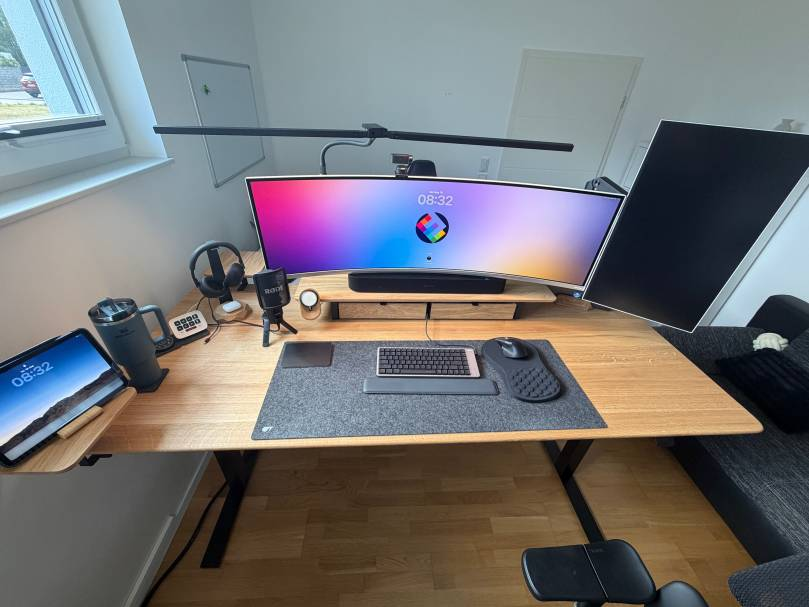
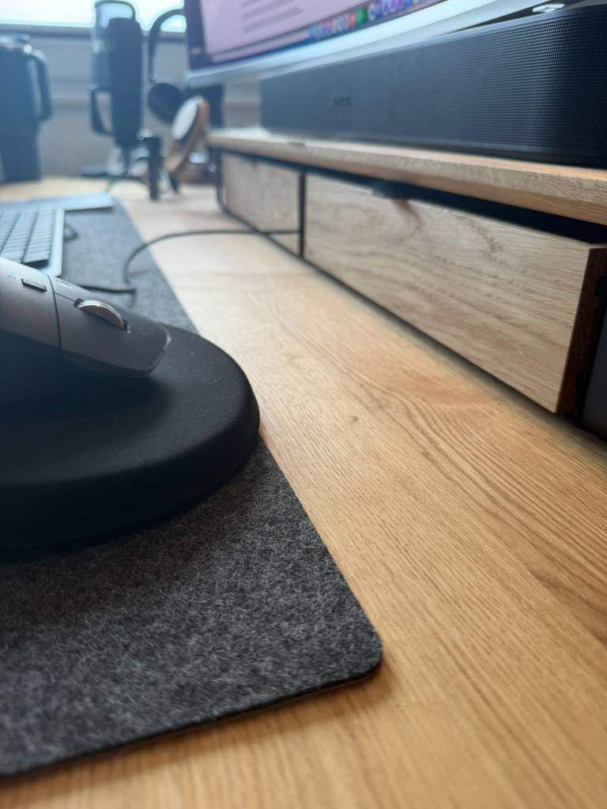
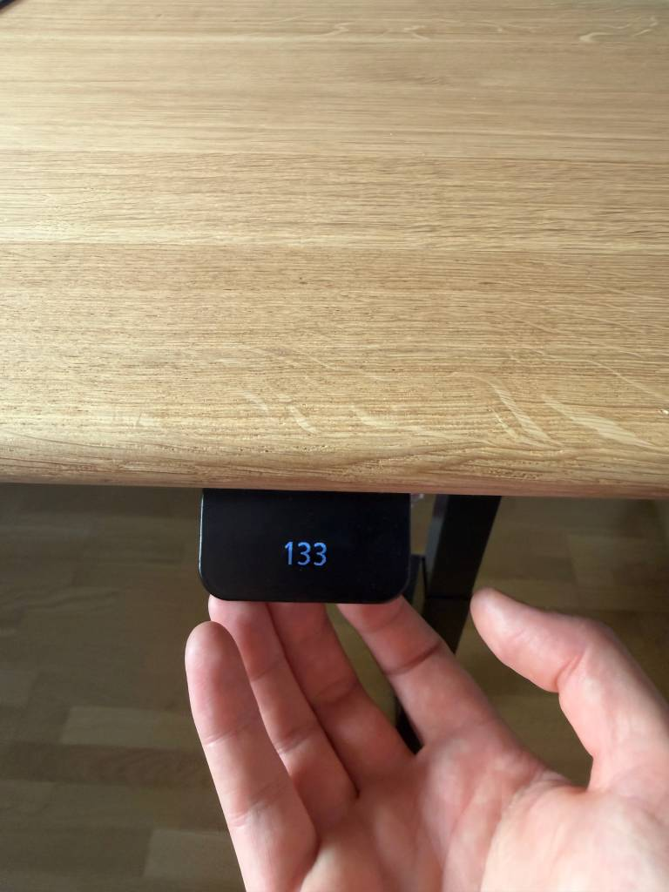
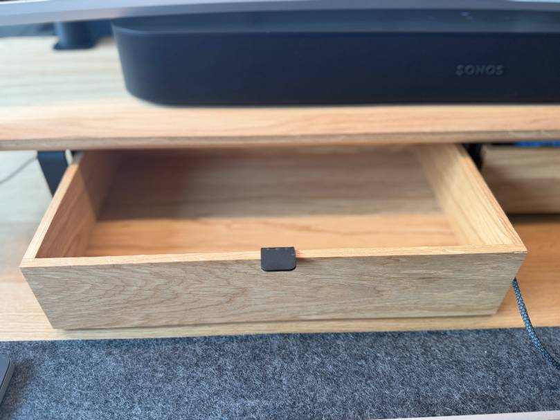
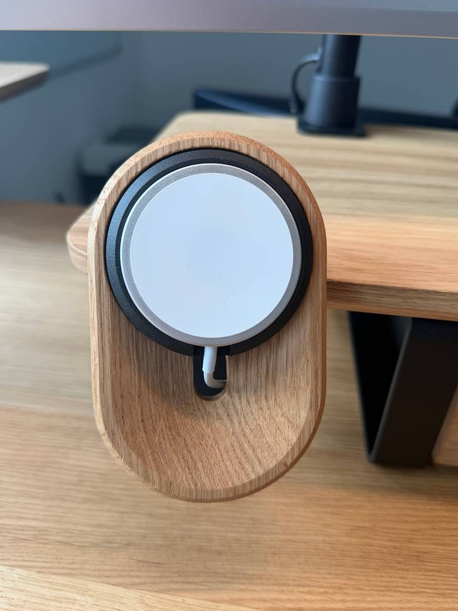
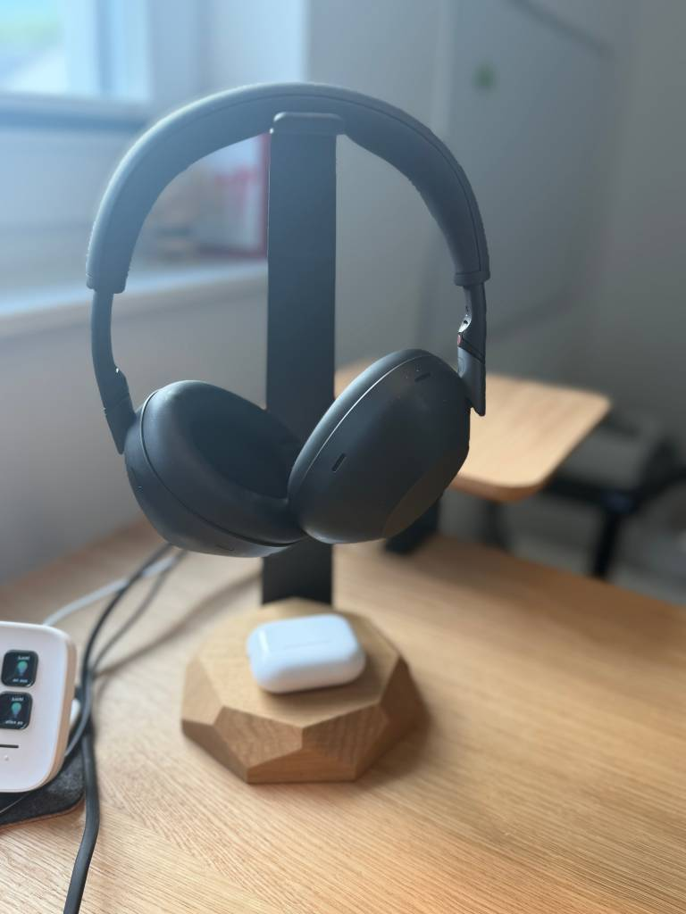
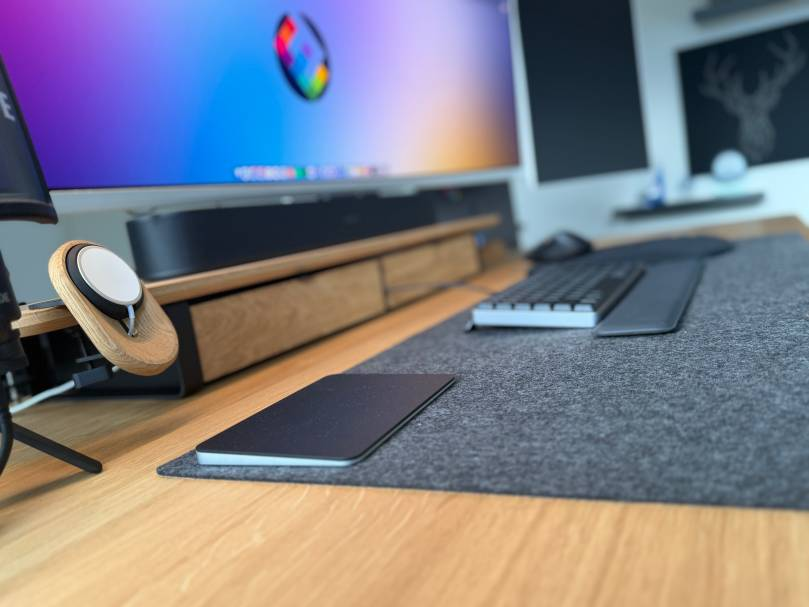

A quick note up front: Oakywood provided the desk and accessories as part of a content partnership. Everything you read here is still 100% my own experience. I’ve been using this setup daily for several weeks.
I’ll be honest: I spend a huge portion of my life at a desk. Coding sessions for Frontier Engine, slide decks for conferences, podcast recordings, writing on this blog,… all of it happens on a surface of roughly 1.4 by 0.7 meters. My old desk was functional, but at some point it hit me: the piece of furniture I spend 70+ hours a week at probably deserves to be more than just “functional.”
That’s where Oakywood came in.

Why Oakywood, of all brands?
I spent a while looking at the market beforehand. There are cheap height-adjustable desks starting at €300, there’s the ergonomic mid-tier, and then there’s a small handful of vendors playing in a completely different league. Oakywood is clearly the latter and that’s not me exaggerating.
Three things convinced me:
- Made-to-order in Poland. Every desk is handcrafted in Ciche after the order comes in. The lead time is seven to eight weeks long, but that’s actually the point. Nothing here is mass-produced on stock. I ordered my desk in a extra lage size.
- Solid FSC-certified wood instead of laminated particleboard. For a piece of furniture that’s supposed to last 10+ years, this makes a massive difference.
- The LINAK frame from the EU. In the office furniture world, LINAK is basically the gold standard for lifting columns. Red Dot Design Award for the control panel, twin motors with 1200 N and 60 mm/s lift speed, these are outstanding specs.

First Impression: Unboxing and Assembly
What I didn’t expect: assembly genuinely takes about ten minutes. Oakywood uses a system called “Click-on Feet” and “Kick & Click” where the legs snap into place without much screwing around. I’ve assembled IKEA side tables that took longer.
The tabletop itself is stunning. Oak, finished with OSMO Topoil a natural wax oil that leaves the wood’s pores open. This has two effects: visually, the grain looks noticeably more present and alive than with lacquered surfaces, and tactilely, the surface actually feels like wood, not sealed plastic imitation. The trade-off: you have to do some maintenance every 6–12 months (Oakywood sells a dedicated maintenance kit for that), and water marks can leave traces if you’re careless. Acceptable for me — I want this wood to age.
The LINAK Control Panel — Small Lever, Big Difference
This sounds like a minor detail, but it’s actually the thing that has shifted my daily routine the most. With my old desk, I had to press buttons and wait until the height was right. With the Standing Desk Pro, I lift the lever briefly desk goes up — or push it down — desk goes down. Double-tap activates one of four saved presets. The display in the middle of the lever shows the exact height.
Sounds minimal, but it’s exactly what makes the difference between “in theory I could switch positions more often” and “I just switch.” The friction is so low that I actually transition between sitting and standing four or five times a day.
On top of that, there’s the Desk Connect app, which sends reminders if you’ve been in one position too long. Sounds annoying, but it’s unobtrusive enough not to break flow — and honestly, sometimes I need exactly that nudge.

And Now the Productivity Bit — Is It Actually Real?
I was skeptical at first. Ergonomics promises often sound like marketing, and “standing desks make you more productive” is exactly the kind of claim where, as a tech person, you immediately want to see the sources.
Turns out, they exist. Mount Sinai School of Medicine published a twelve-month study in 2018 comparing height-adjustable workstations to traditional desks. The results are pretty clear: 65% of participants with height-adjustable desks reported increased productivity and better concentration after one year. 47% reported a significant reduction in upper back, shoulder, and neck discomfort. That’s not selective perception over two weeks — that’s a year of observed behavior.
A study published in the British Medical Journal additionally shows that sit/stand desk users report improved job performance, higher work engagement, and less occupational fatigue compared to a control group. And research in IIE Transactions on Occupational Ergonomics suggests that the reduction in physical and mental fatigue correlates directly with higher productivity.
What I observe in myself lines up pretty closely:
- Less afternoon slump. If I switch to standing around 2 p.m., I don’t drop into that dull hole I used to reliably experience between 2 and 4.
- Better focus phases while coding. Sounds weird, but when I’m working through a complex refactoring task, it actually helps me to stand while thinking. It’s almost a physical signal to my brain: “This matters now.”
- Conference calls while standing are just better. More energy in my voice, more present body language — and the people on the other end of the call notice it too.
Important context: a standing desk isn’t a miracle cure. The productivity gains are more indirect — the desk reduces distractions from pain and boosts energy through better circulation, which then allows for more focused work. Working standing all day isn’t a win either. The point is the switching — and that’s exactly what the Pro makes so frictionless that you actually do it.
The Accessories: Modular Drawers, Felt Trays, and the MagSafe Puck
The desk alone would already make a statement, but Oakywood really shines as a system. I added a few modules to the setup:
Modular Drawer Organizers. Two drawers mounted under the desk. Sounds boring at first, but this is actually the detail that pushed my setup from “tidy” to “clean.” Pens, small cables, webcam covers, notebooks — all off the desk surface, but instantly accessible.

Felt trays. Small trays made of felt for keys, AirPods, wallet — the kind of stuff that otherwise gets scattered across the desk surface. The material switch from wood to felt is one of those design decisions you only appreciate once you have it: visually it’s a break that brings a sense of calm to the setup.
MagSafe puck. My iPhone now charges unobtrusively at the edge of the desk, no Lightning cable lying around, no plastic stand. Small thing, but for a setup you look at every day, it isn’t trivial.

Sustainability — Not Just Marketing Garnish
One point that matters to me and I don’t want to skip: Oakywood does substantially more on sustainability than most in the industry. The wood is FSC-certified, the OSMO wax oil finish is significantly more environmentally friendly than lacquers, and Oakywood partners with organizations like One Tree Planted and Forever Forest — a portion of the profit from every product flows into reforestation projects.
I was cautious about claims like this at first — “sustainable” gets thrown around inflationarily. But if a desk can last seventy years (and that’s realistic for solid wood with a proper frame), then the ecological footprint per year of use is just considerably better than for a €400 desk that ends up at the dump after five years.

What’s Not Perfect (Because I’m Not Writing an Ad)
To keep this post honest, a few things worth mentioning.
- The delivery wasn’t drama-free. Two of the modular drawers got lost in transit, and the MagSafe puck arrived broken. Oakywood’s support (especially Marta) sorted it within 24 hours and confirmed a replacement shipment immediately. That’s not a knock on Oakywood, more on the carrier — but I wanted to mention it transparently.
- Solid wood needs care. If you want a desk you wipe with a wet cloth and call it done, this isn’t it. For me, an oiling session is on the schedule every few months.
- The price. This isn’t a bargain desk. But if you’re someone who replaces desks every three to five years, you often end up paying more in the long run.
Verdict After Several Weeks
I think the most honest indicator of a good product is whether you eventually stop thinking about it. My first standing desk was a “feature” I had to think about often — limited height range, awkward controls, mediocre looks. The Oakywood Standing Desk Pro just disappears into my daily routine. It works, it looks great, it’s quiet, it’s stable — and I actually use the standing function, which by the end of my old desk’s life almost never happened anymore.
Considering that I spend significantly more time at this piece of furniture than I do in any chair, on any couch, or even in my bed — this is an investment that feels right.

Disclosure: This content partnership with Oakywood runs over the coming months. If you have any questions about the setup, configuration, or my experience, feel free to reach out.
A new blog will follow where I speak about my equipment